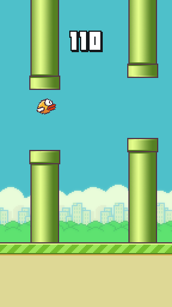
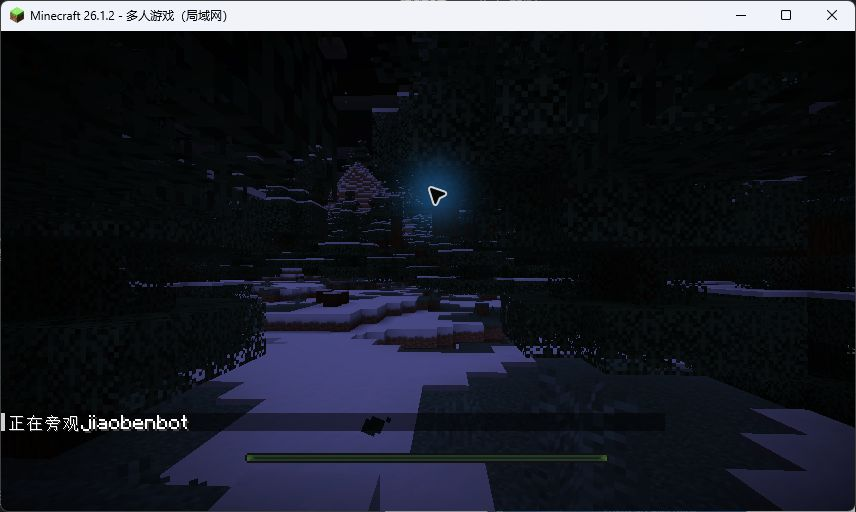

已达验收目标Flappy Bird · 小鸡跳跳跳
100 / 100 局达到 1,000 分
另有单局 10,000 分、零碰撞耐久验证。预训练 Dueling DQN＋36帧碰撞预判保护层；无需千问或 GPU。

历史渲染帧；游戏无最终关卡，目标分数不是通关事件。运行与复测说明 · 100局原始结果 · 耐久结果
进行中 · 已停止Minecraft · 生存智能体
Qwen3.5-4B规划 → Mineflayer执行 → 真实观察。75种项目动作注册、OBS网页画面、BOT旁观已接入。

房屋、床、照明、熟食与浅矿返家尚未形成稳定闭环。攻略已投递队列，但循环未恢复，未证明模型实际执行攻略。
生存攻略 MD · 停止时状态